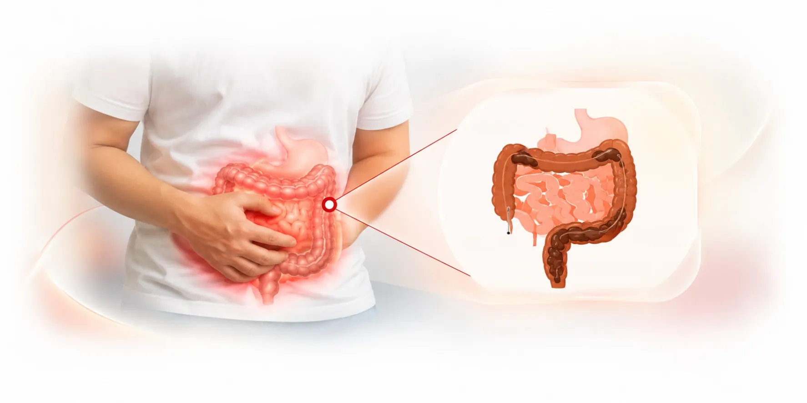

Constipation means passing stool less often than usual, or passing it with straining, hard stools or a feeling that the bowel has not emptied. It is common, and for most people it improves with simple changes to diet, fluids and toilet habits.
Dr. Pradipkumar Tupere, a proctologist and general surgeon at Navoday Clinic in Kharadi, Pune, looks at constipation where it involves the anus and rectum, including straining that leads to piles and fissures. He examines you, looks for the cause and tells you whether you need simple care, more tests or a referral.
At a glance
| Topic | In brief |
|---|---|
| What it is | Passing stool less often than usual, or with straining, hard stools or a feeling of incomplete emptying. |
| Common signs | Hard or lumpy stools, straining, fewer than three bowel movements a week, a swollen belly and a feeling that the bowel has not emptied. |
| Common causes | Too little fibre or water, ignoring the urge, some medicines, other health conditions and, less often, a problem in the anus or rectum. |
| See a doctor if | Constipation is new and lasts more than a few weeks, comes with blood, weight loss or a change in bowel habit, or does not improve with simple care. |
| Who treats it | A physician or gastroenterologist for most constipation, and a proctologist or general surgeon when the anus or rectum is involved. |
| Where | Navoday Clinic, Kharadi, Pune. |
Symptoms of constipation
Constipation looks different from person to person. Common signs include:
- Fewer than three bowel movements a week.
- Hard, dry or lumpy stools.
- Straining, or a feeling that you cannot pass stool even though you want to.
- A feeling that the bowel has not emptied fully.
- Needing to press on the belly or around the anus to pass stool, which you should mention to the doctor.
- A swollen or uncomfortable belly.
See a doctor soon if
- Constipation is new and has lasted more than a few weeks.
- You see blood on the paper or in the stool.
- Your stools have become thin, or your bowel habit has changed.
- You are losing weight without trying, feel unusually tired or look pale.
- Passing stool is painful, because a fissure may be forming.
- Simple care has not helped.
Get emergency care if
You cannot pass stool or gas, your belly is swollen and painful, or you are vomiting. Go to the nearest hospital emergency department.
Constipation has many causes, so a change that lasts should be examined.
Why constipation happens
Most constipation comes from daily habits, and some comes from a medicine or a health condition. Common causes include:
- Too little fibre in the diet, and too little water.
- Ignoring the urge to go, or rushing in the toilet.
- Little physical activity.
- Some medicines, such as certain painkillers, iron and calcium supplements, and some antidepressants and blood pressure medicines. Do not stop a medicine on your own. Ask your doctor first.
- Pregnancy, travel and changes in routine.
- Health conditions such as an underactive thyroid, diabetes and irritable bowel syndrome.
- Pelvic floor muscles that do not relax when you try to pass stool.
- A problem in the anus or rectum, such as a narrowed anal canal, a fissure, a prolapse or, rarely, a growth.
Constipation and anal problems feed each other
Straining raises the pressure in the veins of the anus and can cause piles. Hard stool can tear the lining and cause a fissure, and the pain of a fissure makes people hold back, which makes constipation worse. Treating both together breaks the cycle.
Finding the cause is the first step, so Dr. Tupere asks about your diet, fluids, routine, medicines and any earlier anal problems.
How constipation is assessed
Dr. Tupere starts with questions and an examination, and moves to tests only when they are needed.
01
Your history
He asks how long the problem has lasted, how often you pass stool and what it looks like, what you eat and drink, which medicines and supplements you take, any earlier anal surgery and any family history of bowel disease.
02
Examination
He examines your belly and the area around the anus, and gently checks the anal canal and the lower rectum for piles, a fissure, narrowing, tight muscles or stool held back.
03
Tests when needed
Blood tests can check for causes such as an underactive thyroid, diabetes or anaemia. A colonoscopy may be advised when constipation is new, comes with blood, weight loss or a change in bowel habit, or when your age calls for it. If no cause is found and simple care does not help, special tests of how the rectum and pelvic floor work may be advised.
Constipation treatment, matched to the cause
Most constipation improves with changes you can start at home. Treatment follows the cause, so Dr. Tupere advises the plan after examining you.
Simple care that helps most people
| Step | What it involves |
|---|---|
| Fibre | More fruit, vegetables, whole grains and pulses, added gradually over a few weeks so the belly does not bloat. |
| Fluids | Enough water through the day, and more in hot weather. |
| Routine | A set time each day, often after a meal, without rushing or straining, and going when you feel the urge. |
| Position | Feet on a small stool so the knees sit above the hips, which can make passing stool easier. |
| Activity | A daily walk or other regular movement. |
| Medicines | Stool softeners or laxatives as advised by your doctor. Ask your doctor before using laxatives regularly. |
| Your own medicines | Ask your doctor whether a medicine you take is adding to the problem. Do not stop it on your own. |
When the anus or rectum is part of the problem
If the examination finds piles, a fissure, a narrowed anal canal or a prolapse, Dr. Tupere treats that problem along with the constipation. Surgery is not a treatment for ordinary constipation.
When a referral helps
Some constipation is better treated by another specialist: a gastroenterologist for bowel disease, a physician or endocrinologist for a thyroid or sugar problem, and a pelvic floor physiotherapist when the pelvic floor muscles do not relax. Dr. Tupere refers you when that is the better route.
Consult Dr. Pradipkumar Tupere about constipation
Dr. Pradipkumar Tupere is a proctologist and general surgeon with an MBBS and an MS in General Surgery. He treats conditions of the anus and rectum, including piles, fissures and fistulas. Straining and constipation drive many of them, so he looks at the bowel habit and the anal problem together.
What to expect at your visit
- Book: Call, message on WhatsApp or use the form. We confirm your appointment slot.
- Bring: Any earlier reports, a list of every medicine and supplement you take, a one-week note of how often you pass stool and what it looks like, and your questions.
- Consultation and examination: Dr. Tupere listens to your symptoms and examines you. He explains each step and can pause the examination if needed.
- Your plan: He explains what he found and what to do next. Most patients start with diet, fluids and routine, and not every visit leads to tests or a procedure.
If a test or a procedure is advised: You are guided through preparation and recovery. Recovery time and follow-up depend on the test or procedure.
Constipation: frequently asked questions
What is normal varies from person to person, from a few times a day to about three times a week. Constipation is a change from your usual pattern, with fewer movements, hard stools, straining or a feeling of incomplete emptying. See a doctor if the change lasts more than a few weeks or comes with warning signs.
Yes. Straining raises the pressure in the veins of the anus, and over time this can cause piles or make them worse. Soft stools and a regular routine help prevent them.
Yes. A hard or large stool can tear the lining of the anus, which is a fissure, and the pain can make you hold back stool so that constipation gets worse.
Bright red blood on the paper often comes from piles or a fissure, but blood can have other causes, so bleeding that repeats should be examined. Get emergency care for heavy bleeding or black, tarry stool.
Fruit, vegetables, whole grains and pulses add fibre, and water helps the fibre work. Add fibre slowly, go to the toilet at the same time each day without straining, and stay active. Dr. Tupere gives advice that suits you.
A laxative used for a short time as your doctor advises is usually fine. Some laxatives can be used regularly when medically appropriate, but prolonged use without assessment may delay finding an underlying cause. Ask your doctor before using one regularly.
A colonoscopy may be advised when constipation is new, comes with blood, weight loss, tiredness or a change in bowel habit, or when your age or family history calls for it. Dr. Tupere advises whether you need one after examining you.
Many people improve with more fibre, more water, regular activity and a steady toilet routine. Medicines are added if these steps are not enough, and the cause is treated if one is found.
You can start with a family physician or a gastroenterologist. A proctologist or general surgeon is the right doctor when the anus or rectum is involved, for example with pain, bleeding, a lump or a feeling that the bowel does not empty. Dr. Pradipkumar Tupere is a proctologist and general surgeon who consults at Navoday Clinic in Kharadi, Pune.